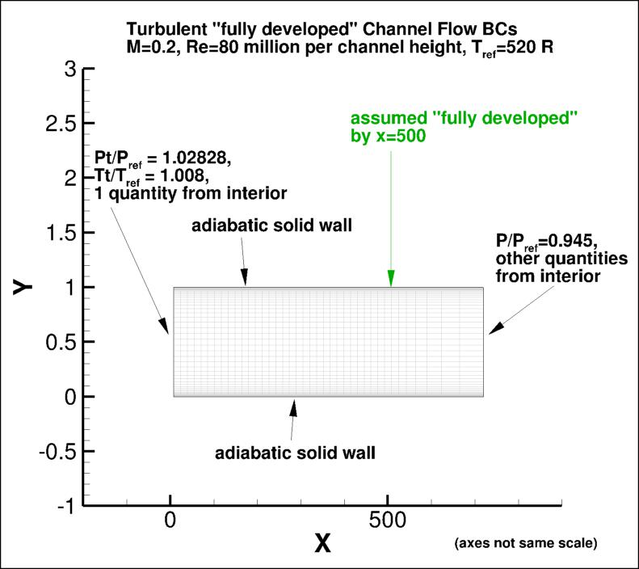
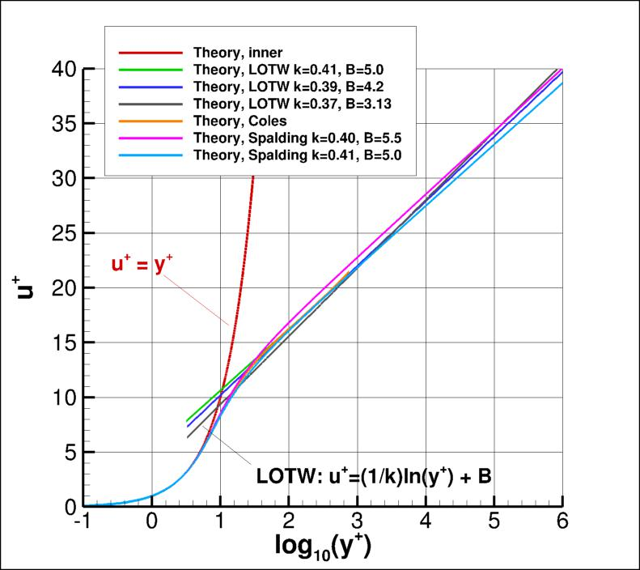
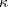

Public Access (formerly Langley Research Center)Turbulence Modeling Resource |
Return to: Turbulence Modeling Resource Home Page
2DFDC: 2D Fully-Developed Channel Flow at High Reynolds Number Validation Case
The purpose here is to provide a relatively
simple showcase problem for demonstrating the results given by a turbulence model for the "classical" case of a
very-high-Reynolds-number turbulent boundary layer in a "fully-developed" channel flow.
This fully-developed channel flow case is run at M = 0.2, at a very high Reynolds number of
80 million based on channel height. An advantage of this case is that, in the fully-developed
region, it has an extensive log layer. This allows
one to more clearly discern the "kappa" (one over the log layer slope) from the results.
This case is run with full spatial development of the flow allowed to occur; hence, the channel is
very long compared to its width. For CFD, this can be a challenging case to converge sufficiently.
It is also possible to run this as a 1-D case, but here it is assumed that the
user only has available a two-dimensional compressible RANS code.
The case is currently run as a full channel; it is also possible to run
only one-half of the channel, and apply symmetry boundary conditions.
The following plot shows the layout of the channel
flow grids, along with typical boundary conditions.
The back pressure was chosen to attempt to achieve a u/Uref of approximately 1 near
the position x=500.
(Note that particular variations of the BCs at the inflow and outflow
may also work and yield similar results for this problem.)

Definitions are given here for some relevant quantities:
The classical law-of-the-wall (LOTW) theory is:
Eventually the "log layer" ends in a region known as the "wake" or "outer" region, but we do not focus on that here.
The higher the Reynolds number, the more extensive the "log layer".

The data that produced the above plot are provided here:
flat plate theory.
What to Expect:
(Other turbulence model results may be added in the future.)
Return to: Turbulence Modeling Resource Home Page


in the log layer, with  representing one over the slope and
the intercept.
Very near the wall:
Values for and
are not set in stone; some typical values are
shown in the plot below. Some other theories (beside LOTW) are also shown in the plot, which should give a feel
for the approximate spread in expected results (see, e.g., White, F. M., Viscous Fluid Flow, McGraw-Hill, New York, 1974, pp. 471-474,
Coles, D., J. Fluid Mech. 1(2):191-226, 1956,
https://doi.org/10.1017/S0022112056000135
Coles, D., RAND Corp Rept. R-403-PR, 1962,
https://www.rand.org/pubs/reports/R403.html
and Marusic, I. et al., J. Fluid Mech. 716:R3-1 - R3-11, 2013,
https://doi.org/10.1017/jfm.2012.511).
And there are many other theories not shown here as well (such as the power law theory, e.g.,
Barenblatt, G. I., J. Fluid Mech. 248:513-520, 1993,
https://doi.org/10.1017/S0022112093000874).
A "classical" turbulent boundary layer should follow the
u+=y+ curve very near the wall, then follow an approximately straight line in the
"log region" somewhere in the midst of all the lines shown in the plot below for log10y+ > about 1.5.
Note that the plot below is shown with u+ as a function of log10y+.
One can translate easily between "ln"="loge" and "log10" using:
RESULTS
LINK TO EQUATIONS
MRR Level
SA
SA eqns
4
SA-QCR2000
SA-QCR2000 eqns
3
SSTm
SSTm eqns
3
SSG/LRR-RSM-w2012
SSG/LRR-RSM-w2012 eqns
3
Wilcox2006-klim-m
Wilcox2006-klim-m eqns
2
K-kL-MEAH2015
K-kL-MEAH2015 eqns
3
Page Curators: Christopher Rumsey,
Ethan Vogel,
Clark Pederson
Last Updated: 11/10/2021